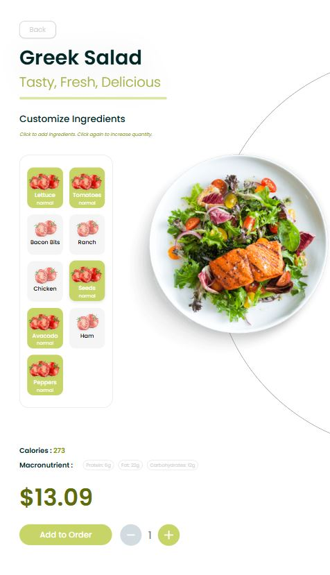

Customer ordering interface
I developed the kiosk application using a web front end, Node.js backend, and Electron wrapper. I worked with a UI freelancer on the initial Figma design, used AI-assisted tools to help implement it, and then manually refined the layout, responsiveness, and behavior for the physical kiosk.
The application supports multiple kiosk clients, Stripe card payments, electronic receipts, and cloud order history. It sends completed orders to the automation system and prevents new orders when machine faults make fulfillment unreliable.
TypeScript · Node.js · Electron · Stripe API
